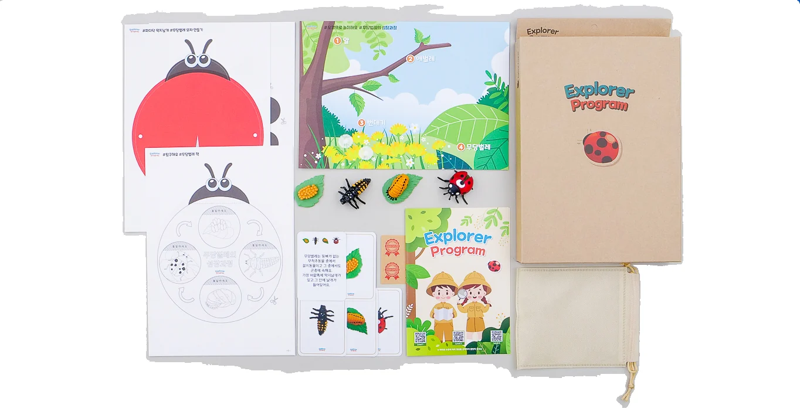
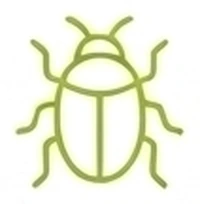
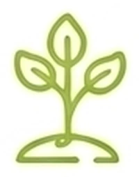
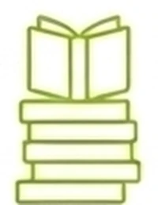
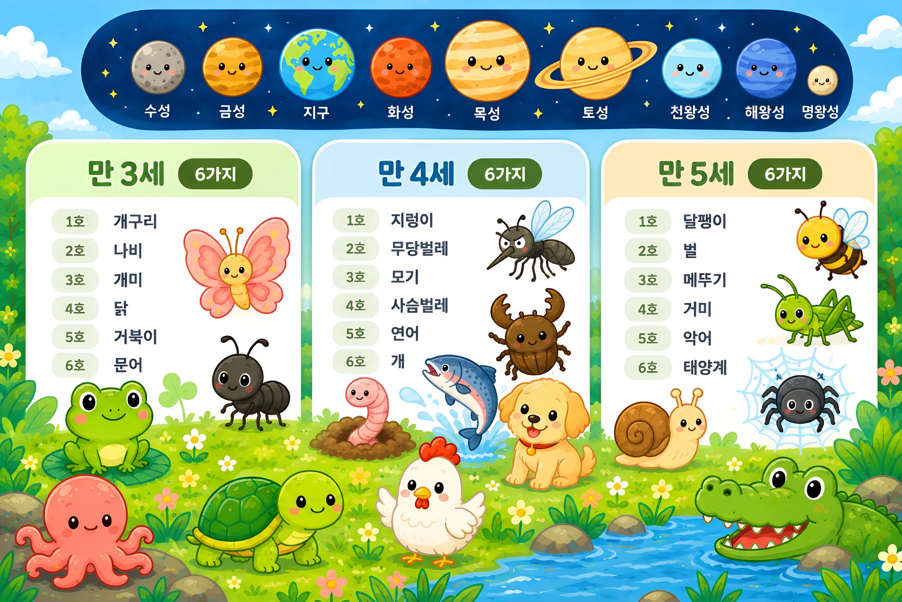

생명의 존엄성을 배우고 긍정적인 인성 발달을 도와주는 어린이 필수 교육입니다.
탐험가 프로그램은 실물과 흡사한 피규어와 놀이 활동을 결합한 생태 교육 프로그램입니다.
실제 모형을 손으로 직접 만지고, 북아트를 하며,
나만의 생태 도감을 스스로 완성해 가는 자기주도형 생태 탐험 패키지입니다.
탐험가 프로그램을 시작하시면 개구리부터 사슴벌레, 그리고 태양계까지,
만 3세부터 5세까지 발달 과정에 맞춘 총 18가지의 테마를 탐구해 보실 수 있습니다.


설명지에 포함된 QR 코드를 스캔하시면 교육용 영상을 시청하실 수 있습니다.

실감 나는 모형을 활용하여 생물의 성장 과정을 탐구할 수 있습니다.

각 프로그램마다 다양하게 마련된 활동을 통해 여러 가지 체험을 할 수 있습니다.
만 3세부터 5세까지 발달 과정에 맞춘 테마를 골고루 탐구합니다.

3개 연령 · 18가지 테마를 두 달에 한 번씩, 한 해 동안 여섯 가지 주제로 탐구합니다.